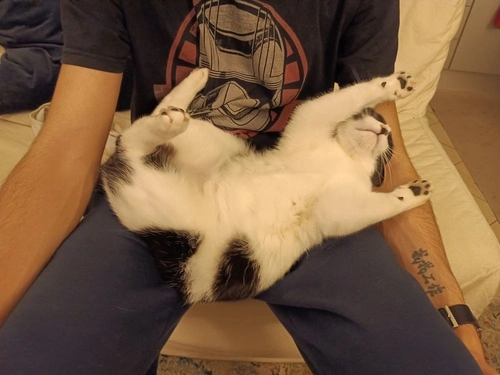

Cara moglie
Io
E Kiki
Vogliamo augurarti buon compleanno! 
Per migliorare questa esperienza audiovisiva vorrei che tu mettessi le
cuffiette. Appena l’avrai fatto passa pure alla prossima slide
26 anni! So a cosa stai pensando… Hai valicato il confine dei 25 anni!
25 anni sono ¼ di secolo… 5, 10, 15, 20, 25
26!

Immagino che tra le tante voci che girano nella tua testa ce ne siano
alcune che ti dicono “26 anni” come se fosse un conto alla
rovescia…come se ti dicessero:
“Non dimenticare che
26 anni = 30 anni - 4 anni
26 anni = 30 anni - 4 anni
…e ricorda pure che
27 anni = 30 anni - 3 anni
27 anni = 30 anni - 3 anni
…e quando ne avrai finalmente 30
In realtà saranno 40 - 10
In realtà saranno 40 - 10
"
Personalmente non sono un grande fan di queste voci.
Per carità, hanno un loro significato. Vogliono ricordarti che il
tempo ha un valore importante, anzi importantissimo, che è limitato e
non va buttato. Abbiamo degli obiettivi e autoimporsi delle scadenze
aiuta a realizzarli. Il tempo è denaro, non dobbiamo sprecarlo. Le
nostre capacità mentali degradano col tempo. Dobbiamo approfittarne
ora che siamo giovani...

Grazie per l'aiuto...e per l'ansia esistenziale
Ma ora che sei qui con le cuffie ascoltando musica rilassante vorrei
proporti un esperimento:
Quando vedrai scritto VIA passa alla prossima slide, leggi e chiudi
gli occhi per 2 secondi. Poi riaprili e vai alla slide successiva.
Quando leggerai STOP l’esperimento sarà concluso.
Pronta?
Quando leggerai STOP l’esperimento sarà concluso.
Pronta?
VIA
45
86
17
31
8
STOP
Secondo i miei calcoli dovresti aver visualizzato delle persone che
avevano più o meno quell’età. Magari le conosci oppure le hai solo
viste da qualche parte, o magari le hai immaginate. Tutte però avevano
più o meno quell’età
Ora proseguiamo l’esperimento. Come prima, al VIA leggi e chiudi gli
occhi…però stavolta puoi tenerli chiusi più a lungo, per quanto tempo
desideri.
Pronta?
VIA
26
...
Non riesco ad immaginare cosa ti sia passato nella testa. Forse nubi
colorate sparse, sensazioni miste, qualche ricordo qua e là…Forse
c’erano delle voci, o magari c’era una forma di silenzio. Forse hai
immaginato qualche persona, o magari non c’era nessuno.
Cosa significa 26?
Probabilmente non significa 12, e neanche 25 o 27.
E per l’amor di dio, sicuramente non significa 30 - 4!
Solo tu puoi sapere che cosa significa 26
Qualunque cosa tu abbia immaginato durante questo piccolo esperimento,
conservane un ricordo e tienitelo stretto per l’anno che verrà, perché
non c’è modo migliore di affrontarlo se non grazie alla bellezza
dell’unicità del presente.
Ecco, con questo messaggio io voglio augurarti che il presente non ti
sfugga mai dalle mani, nemmeno per un istante.
Io
E Kiki 
Vogliamo augurarti buon compleanno.
Spero che questo sia l’anno migliore della tua vità.
Spero che questo sia l’anno migliore della tua vità.
Per il momento accetta questo piccolo regalino
Forse ce ne sono altri che ti stanno aspettando una volta che
torneremo in patria.
Ti amo
Tuo marito
Tuo marito